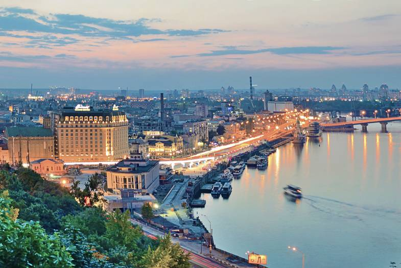
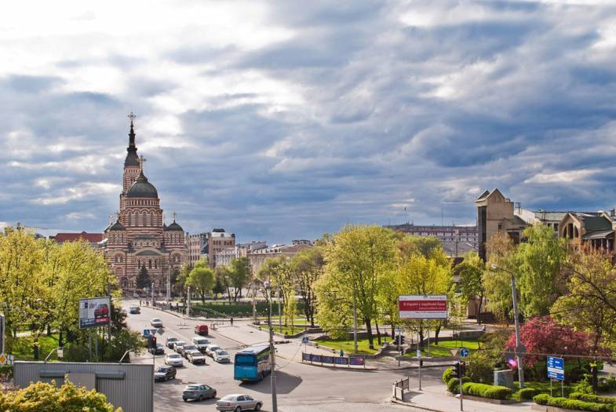
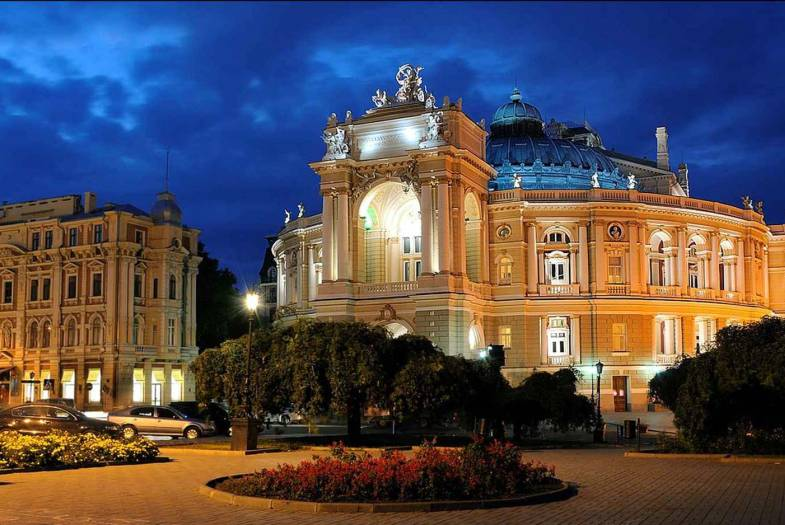
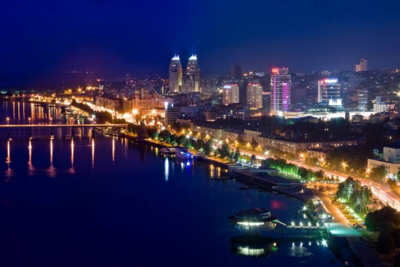
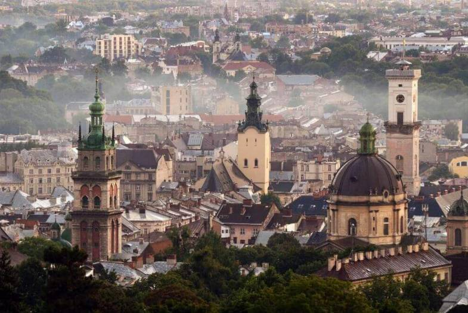

Україна налічує багато міст та селищ, які населені та розвиваються.
Є як великі міста, так і маленькі. Розрізняють міста України за кількістю населення.
Найбільші міста України та міста мільйонники - це Київ, Харків, Одеса, Львів, Дніпро, Донецьк, Запоріжжя.
Великі міста України - Полтава, Вінниця, Черкаси та багато інших міст. Та маленькі містечка, але не менш важливі - Ізюм, Коломия, Бориспіль, Прилуки та ін.
Звісно, саме велике та популярне місто - це столиця України.

Київ розташований на річці Дніпро , яка розділяє його на Лівий та Правий берег. В місті нараховують багато підприємств, та вважають столицю - промисловим центром. Територія міста оточена лісами. На Дніпрі знаходиться Київська ГЕС. Місто славиться також своєю архітектурою. Багато збереглось пам,яток архітектури до нашого часу. Київ вважають одним з найстаріших історичних центрів Європи. Саме в Києві знаходиться знаменита “Києво - печерська лавра”, до якої приїджають з усіх куточків світу.

Друге велике місто - це Харків. Це велике історичне, наукове , промислове та культурне місто України. Це місто молоді та розвитку. Саме в Харкові знаходиться інститут ім.Каразіна,який входить в топ 500 ВНЗ всього світу. Хто ж не знає про знаменитий ринок в Харкові? Також в місті дуже багато промисловості.Розвинені та працюють заводи в таких галюзяк,як енергомашинобудування,транспортного та сільськогосподарські машинобудування, авіакосмічна промисловість. Безліч цікавих місць щороку приваблюють тисячі туристів. Основним парком є парк Шевченка в центрі міста. Проргулявшись через який, можна вийти на головну площу Харкова- яка є найбільшою у Європі.

Одеса - це перлина нашої країни. В місті панує свій колорит. Місто портове , знаходиться на північно - західному узбережжі Чорного моря. Одеса входить до трійки міст України за чисельністю архітектурної, культурної спадщини. Одеса відрізняється від інших міст України. Вона багата своєю історією, культурою, архітектурою, а, крім того, має безліч інших цікавинок. Однією яскравою особливістю Одеси є морський порт. Для мандрівників найзручнішим транспортним засобом залишаєтьсякруїзне судно. Також визначною пам’яткою Одеси є Потьомкінські сходи, з яких відкривається незабутній краєвид. Так як це портове місто - розвинена торговельна промисловість. В місті знаходиться один з відомих торгових ринків.

Почесне четверте місце посідає місто Дніпро. Це діловий, промисловий та наукове місто України. Розвинена металургійна, машинобудівна та гірничорудна промисловість. В місті розвинена освіта, культура та мистецтво. Місцем для прогулянки є набережна .Її довжина складає майже 23 км. На Жовтневій площі та в парку ім.Шевченка знаходяться історична архітектура Дніпра. А біля самого міста знаходять 3 фортеці. Найвідоміша з них - це фортеця Кодак.
Донецьк - це великий металургійний та гірничорудний промисловий центр України. Свою назву наше місто отримало від річки Сіверський Донець, що тече через північ Донецької області і є дуже красивою, широкою і напрочуд величною. Багато чоловіків, що живуть у Донецьку, працюють в галузі вугільної промисловості. Також Донецьк є осередком наукової спадщини. Тут багато закладів вищої освіти. До початку російської агресії - це було місто шахтарів. Донецьк відвідувало багато туристів. Одним з головних туристичних осередків є - планетарій.Також свою увагу завжди привертає парк кованих фігур, знамениті Алеї Арок, ботанічний сад. В місті розташований собор, театр ляльок та філармонія.
Запоріжжя також відноситься до найбільших міст України. Розташоване на берегах річки Дніпро. Через місто проходять основні торгівельні шляхи. Район міста характеризується значним природним потенціалом. Знаходяться залежі природного вугілля, родовища урану. Розвинені промислові галузі. За чисельністю наседення місто посідає почесне шосте місце. Місто знаходиться неподалік міста Дніпра. Транспортна галузь дуже добре розвинена. Провідна роль посідає на залізничний, річковий та автомобільний транспорт. Славиться місто своєю історичною спадщиною . Острів Хортиця, який знаходиться біля міста ,приваблює туристів. З острова відкривається чудовий краєвид на Дніпрогес,яка вражає своєю міцністю та величиною. В Запоріжжі знаходиться багато вищих навчальних закладів, тому багато молоді навчається саме в цьому місті.

На заході України знаходиться велике місто по чисельністю населення - це Львів. Це місто засноване багато століть тому. І має величезну історичну спадщину. В місті переплились між собою не тільки українська культура, а й польська та вірменьська. Про це свідчать маленькі затишні вулички. В місті знаходиться багато музеїв, театрів, соборів. Це туристична столиця України. Стара частина міста розташована в центральній частині. В ній знаходиться знаменита Площа Ринок, в центрі якого знаходиться знаменита Ратуша або “Біг Бен”, як її називають в народі.Щодня тисячі туристів відвідують площу. Місто дуже колоритне. Відомі на весь світ заклади громадського харчування, щодня привертають увагу сотню туристів. Це “столиця” шоколаду та напоїв. У Львові вперше почали варити пиво, винайшли гасову лампу та відкрили першу кав,ярню ще у 18 столітті.
На території України знаходиться велика кількість міст, які посідають перші місця за чисельністю населення, за територією, за промисловою та туристичною індустрією.
{kind=link}